Когнітивний тренажер для розвитку реакції, пам'яті, точності та координації
Нейро Блок — це пристрій для когнітивних тренувань, який допомагає розвивати та оцінювати чотири ключові нейрокогнітивні функції:
| Тренажер | Що розвиває |
|---|---|
| Точність | Моторний контроль, прицільність, швидкість реагування на рухомі цілі |
| Реакція | Швидкість відповіді на зоровий стимул, стійкість уваги |
| Пам'ять | Короткотривала пам'ять, запам'ятовування послідовностей |
| Координація | Одночасна робота декількох кінцівок, координація рухів |
Пристрій підтримує до 16 профілів пацієнтів і зберігає історію тренувань на SD-картці.
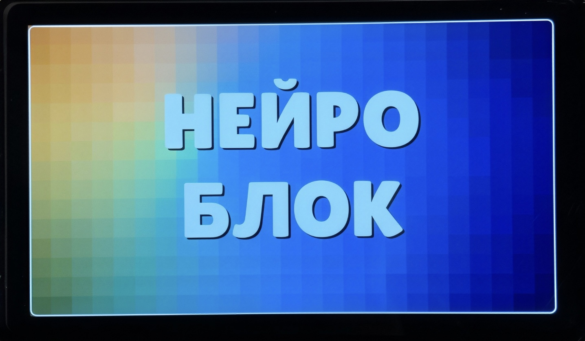
Зовнішній вигляд пристрою «Нейро Блок»
💡 Екран завантаження відображається кожного разу при запуску або після тривалої бездіяльності.
Після завантаження відкривається екран вибору пацієнта з сіткою з 16 кнопок:
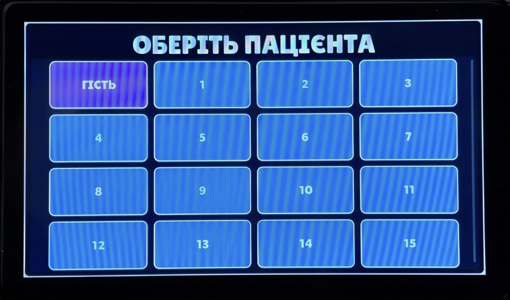
Екран вибору пацієнта — сітка 4×4 з кнопками профілів
| Кнопка | Призначення |
|---|---|
| 0 | Гість (тренування без збереження прогресу) |
| 1–15 | Індивідуальні профілі пацієнтів |
💡 Якщо протягом 10 секунд не було жодної дії — екран автоматично повернеться до екрану завантаження.
Після вибору пацієнта відкривається екран із заголовком «ПАЦІЄНТ X» (або «ГІСТЬ» для кнопки 0) та підписом «ОБЕРІТЬ РЕЖИМ».
На екрані дві великі кнопки:
| Кнопка | Колір | Дія |
|---|---|---|
| ТРЕНАЖЕРИ | Зелений | Перехід до головного меню з 4 тренажерами |
| СТАТИСТИКА | Блакитний | Перегляд статистики обраного пацієнта (див. розділ 12) |
Також вгорі є кнопка «НАЗАД» — повернення до вибору пацієнта.
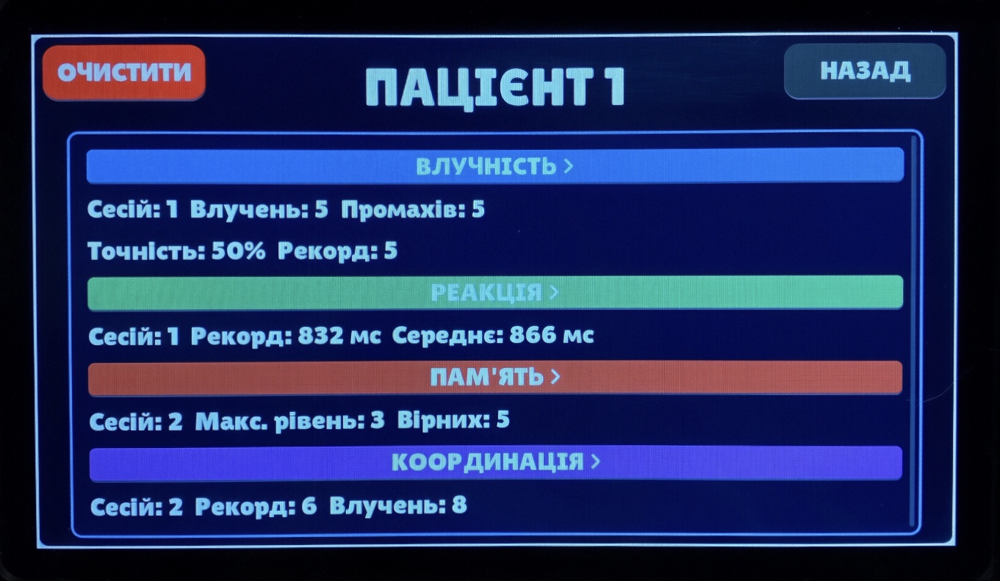
Екран вибору режиму — «Тренажери» або «Статистика»
Головне меню містить 4 великі кольорові кнопки, кожна відповідає одному тренажеру:
| Кнопка | Колір | Тренажер |
|---|---|---|
| 🟨 | Золотий / Бурштиновий | Точність |
| 🔵 | Блакитний | Реакція |
| 🟣 | Фіолетовий | Пам'ять |
| 🟢 | Зелений | Координація |
На кожній кнопці відображається найкращий результат поточного пацієнта для даного тренажера.
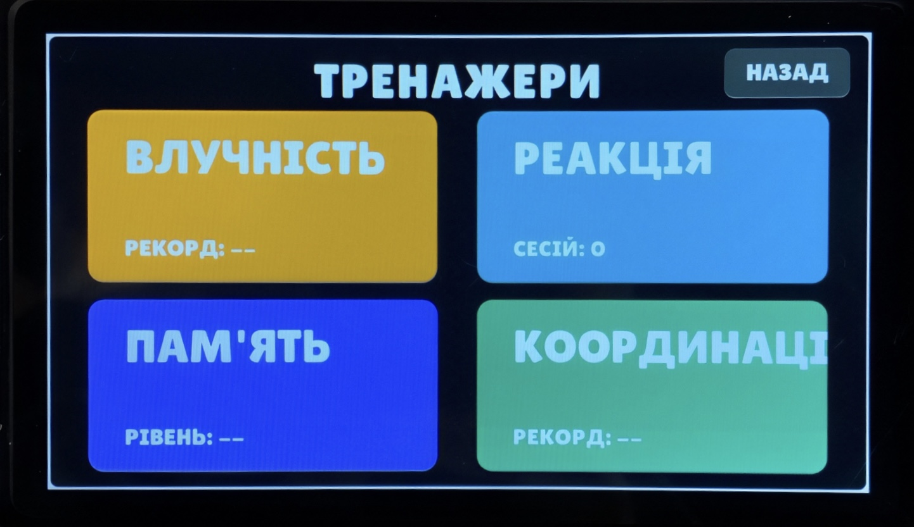
Головне меню — 4 тренажери: Влучність, Реакція, Пам'ять, Координація
Тренує прицільність та реакцію — потрібно натискати кнопку з підсвіченим LED у правильний момент.
Після натискання кнопки «Влучність» з'являється підменю з трьома рівнями:
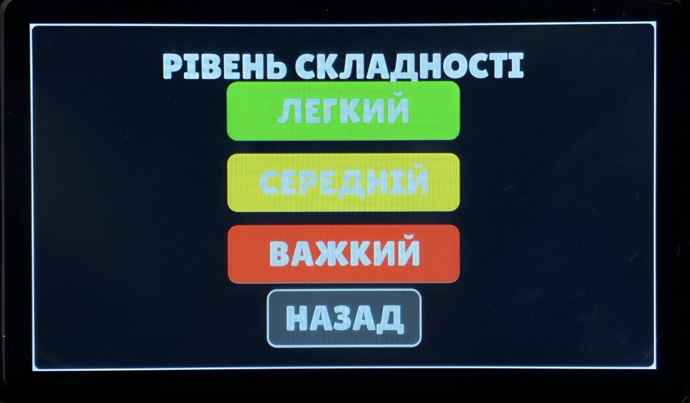
Вибір рівня складності: Легкий, Середній, Важкий
| Параметр | Значення |
|---|---|
| Ціль | Одна кнопка спалахує пурпурним кольором |
| Завдання | Натиснути кнопку, поки вона світиться |
| Кількість раундів | 10 |
| Тайм-аут на раунд | 10 секунд |
| Допустимо промахів | 5 |
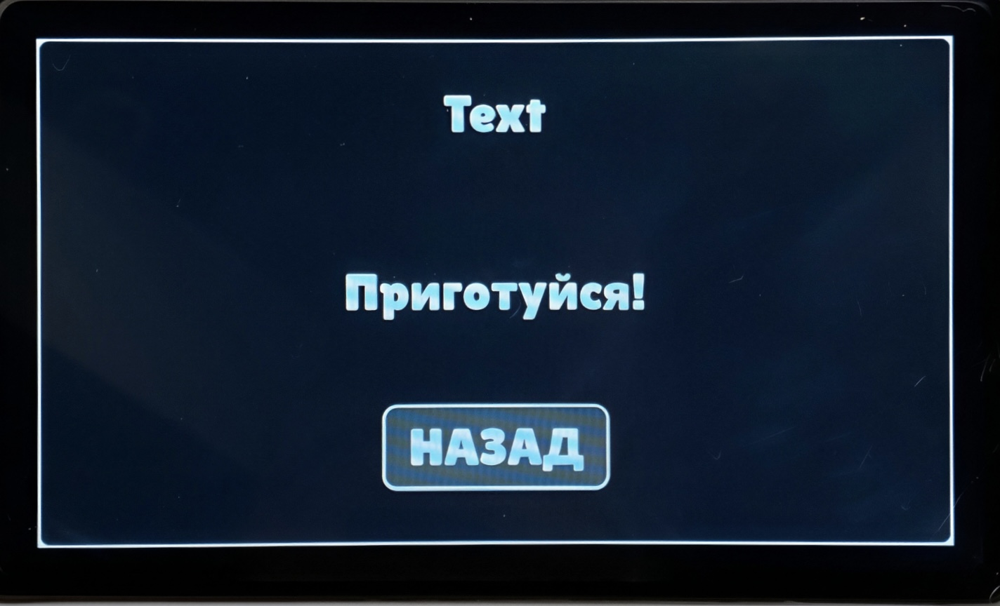
Екран підготовки — «Приготуйся!»
Як грати:
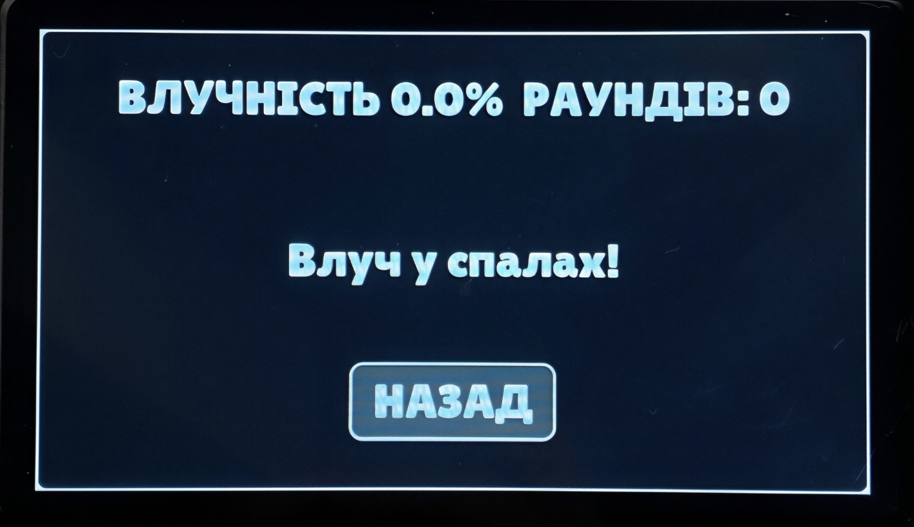
Екран гри «Влучність» — влуч у спалах!

Екран гри «Влучність» з кнопкою «Назад»
| Параметр | Значення |
|---|---|
| Ціль | LED жовтого кольору, який постійно рухається |
| Завдання | Наздогнати рухому ціль та натиснути її кнопку |
| Тайм-аут на раунд | 15 секунд |
| Допустимо промахів | 5 |
Як грати:
| Параметр | Значення |
|---|---|
| Ціль | Синій статичний LED + жовтий LED-«змійка» (3 LED), що рухається |
| Завдання | Натиснути жовту змійку, коли вона знаходиться на синій цілі |
| Кількість раундів | 10 |
| Тайм-аут на раунд | 10 секунд |
| Допустимо промахів | 5 |
Як грати:
Вимірює та тренує швидкість реакції на зоровий стимул.
Після натискання кнопки «Реакція» з'являється підменю з двома режимами:
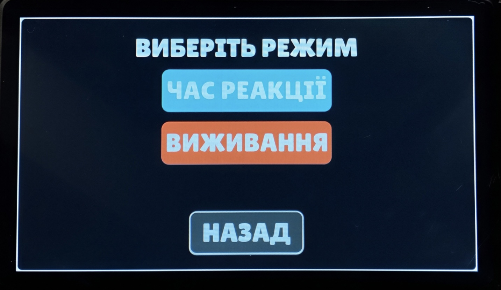
Вибір режиму: «Час реакції» або «На витримку»
| Параметр | Значення |
|---|---|
| Кількість раундів | 5 |
| Завдання | Натиснути кнопку, що спалахнула зеленим, якомога швидше |
Як грати:
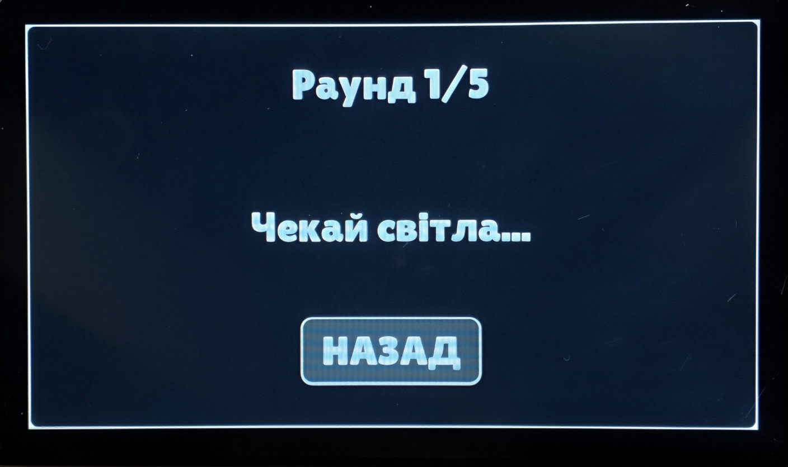
Екран очікування — «Чекай світла...» (Раунд 1/5)
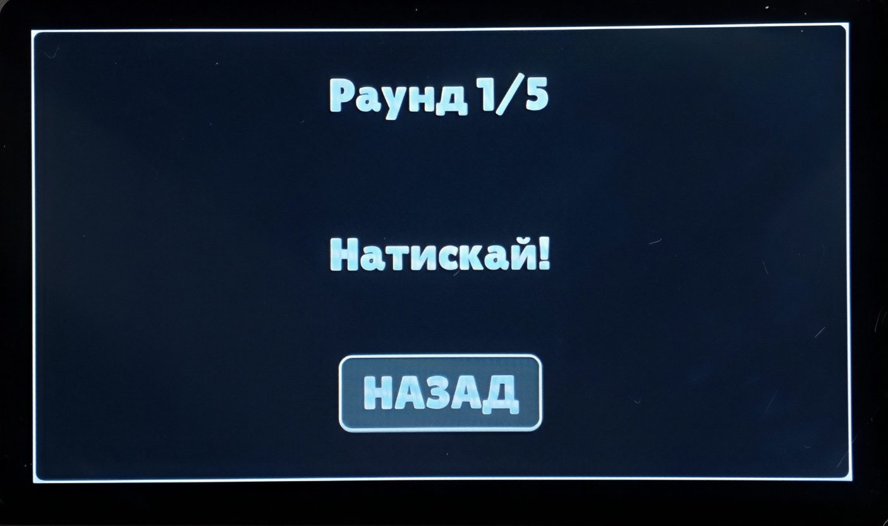
Екран гри — «Натискай!» (Раунд 1/5)
Оцінка:
| Час реакції | Оцінка |
|---|---|
| < 300 мс | «Відмінно!» 🌟 |
| 300–500 мс | «Добре!» 👍 |
| > 500 мс | Потрібно тренуватися більше |
Спочатку оберіть тривалість гри:
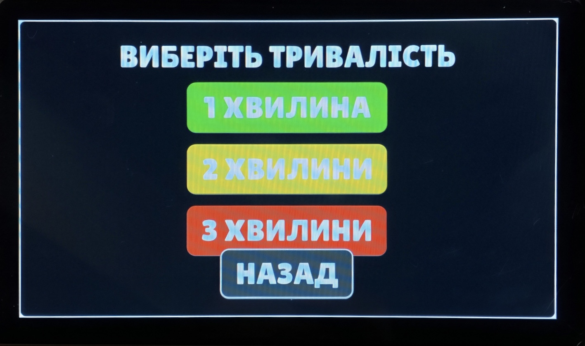
Екран вибору тривалості гри
| Варіант | Тривалість |
|---|---|
| 1 | 1 хвилина |
| 2 | 2 хвилини |
| 3 | 3 хвилини |
| Параметр | Значення |
|---|---|
| Завдання | Натискати правильні кнопки протягом обраного часу |
| Штраф за помилку | Миттєве завершення гри! |
Як грати:
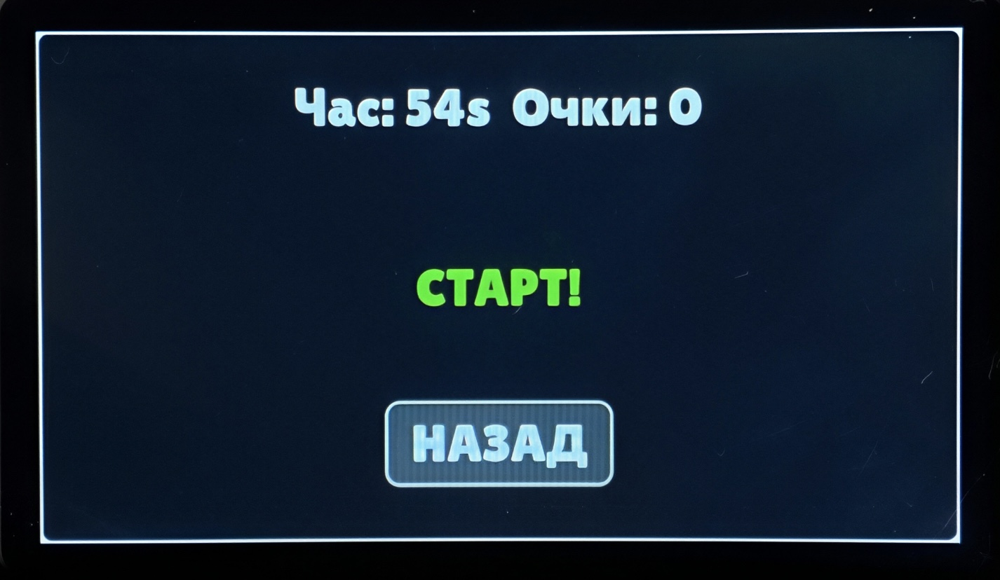
Екран гри «На витримку» — зворотний відлік часу

Екран гри «На витримку» з кнопкою «Назад»
Результат: кількість правильних натискань за відведений час.
⚠️ Увага! У цьому режимі навіть одне помилкове натискання завершує гру. Будьте уважні!
Тренує короткотривалу пам'ять — запам'ятовування та відтворення послідовностей кнопок.
💡 Цей тренажер не має підменю — починається одразу після натискання.
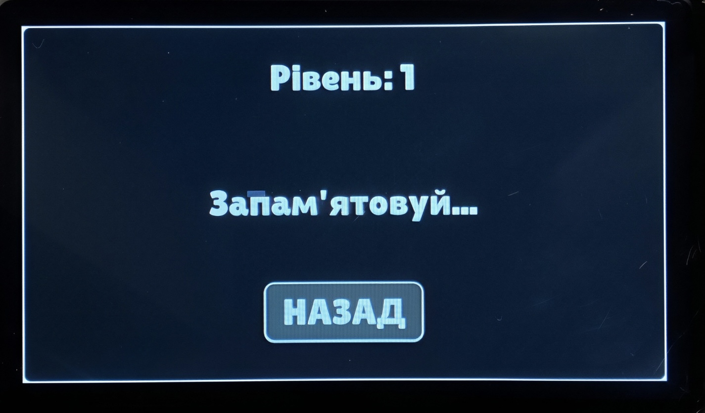
Екран гри «Пам'ять» — запам'ятовуй!
| Параметр | Значення |
|---|---|
| Кількість рівнів | 8 (від 1 до 8 кнопок) |
| Штраф за помилку | Миттєве завершення гри |
| Час показу одної кнопки | 260 мс |
| Пауза між кнопками | 120 мс |
Як грати:
Відображається у форматі: «Досягнутий рівень / 8» (наприклад, «5 / 8»)
Тренує зорово-моторну координацію та здатність одночасно натискати кілька кнопок.
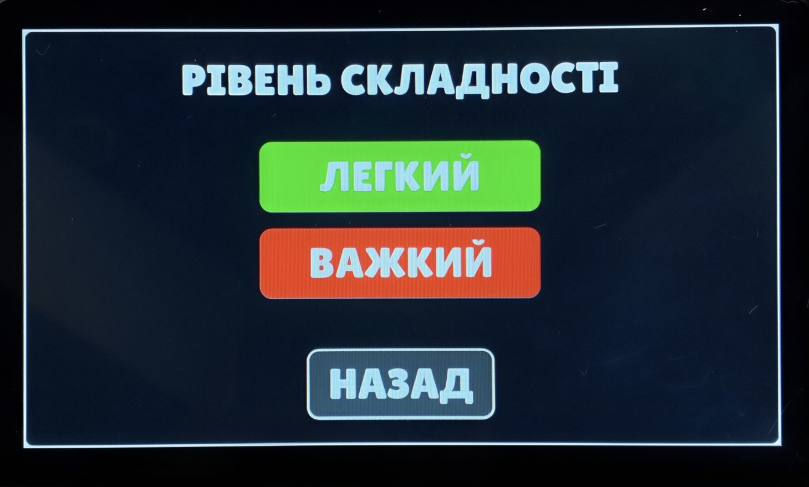
Координація — вибір рівня: Легкий або Важкий
| Параметр | Легкий | Складний |
|---|---|---|
| Стартова кількість LED | 1 | 3 |
| Максимальна кількість LED | 10 | 16 |
| Початковий час показу | 3 сек | 3 сек |
| Мінімальний час показу | 0.8 сек | 0.8 сек |
| Зменшення часу за рівень | 200 мс | 200 мс |
Як грати:
⚠️ Увага! Натискання неправильної кнопки одразу завершує гру.
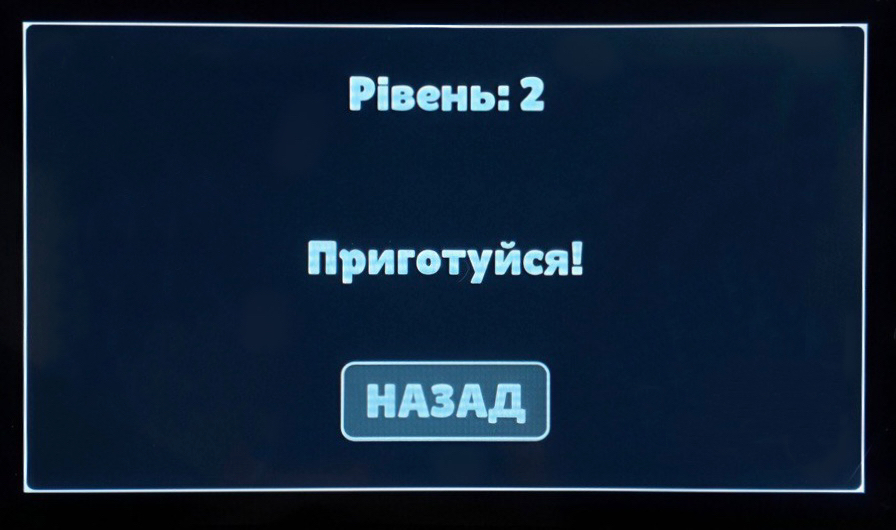
Рівень 2 — «Приготуйся!»
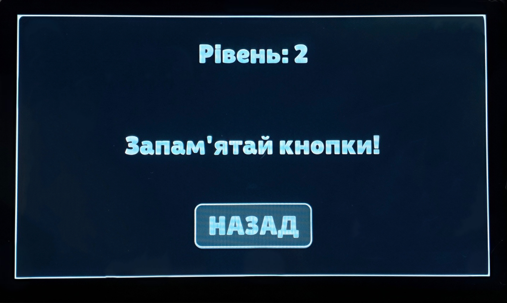
Рівень 2 — «Запам'ятай кнопки!»

Рівень 2 — «Натисни кнопки!»
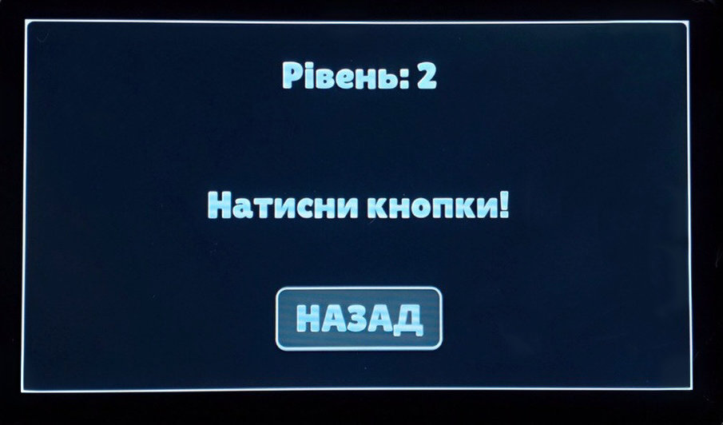
Рівень 2 — «Натискай кнопки» з кнопкою «Назад»
Відображається у форматі: «Досягнутий рівень / Максимальний рівень»
Після завершення кожного тренування відображається екран результатів:
| Тренажер | Формат результату |
|---|---|
| Точність | Відсоток влучень (%) |
| Реакція (Час) | Середній час реакції (мс) |
| Реакція (Витримка) | Кількість правильних натискань |
| Пам'ять | Досягнутий рівень / 8 |
| Координація | Досягнутий рівень / макс |
| Кнопка | Дія |
|---|---|
| Грати знову | Перезапустити той самий тренажер з тими ж налаштуваннями |
| Вийти | Повернутися до головного меню |
💡 Результат автоматично зберігається у профіль обраного пацієнта (окрім «Гостя»).
Щоб переглянути статистику пацієнта:
Для кожного з 4 тренажерів показується:
Натиснувши на назву тренажера (наприклад, «РЕАКЦІЯ >»), ви відкриєте детальну історію останніх сесій:
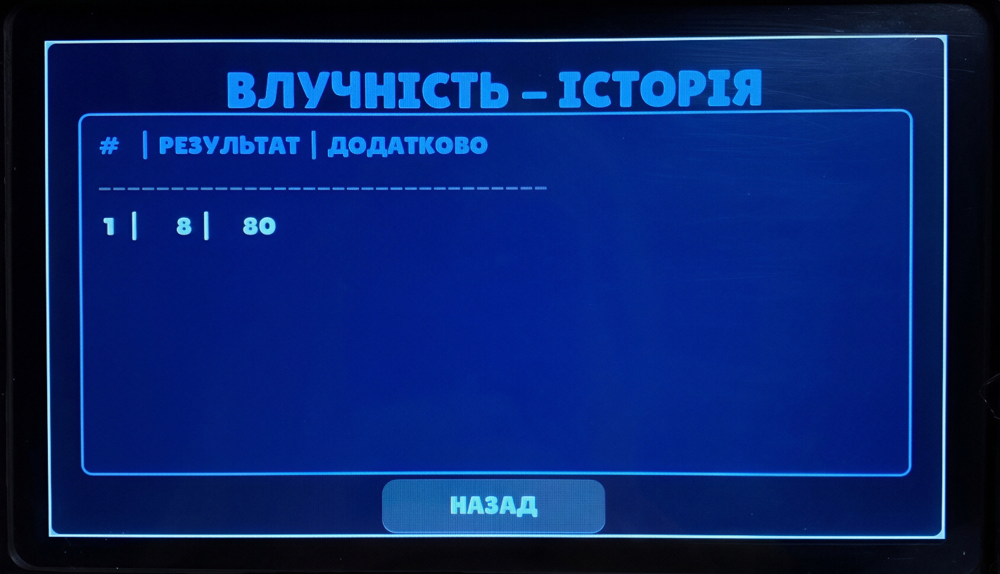
Історія тренувань «Точність» — таблиця результатів
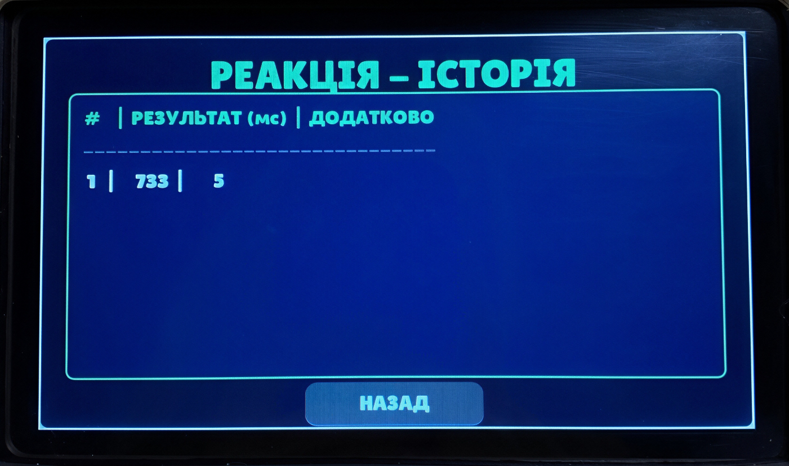
Історія тренувань «Реакція» — таблиця результатів
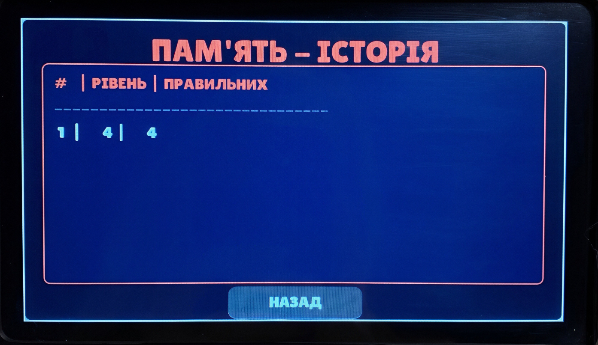
Історія тренувань «Пам'ять» — таблиця результатів
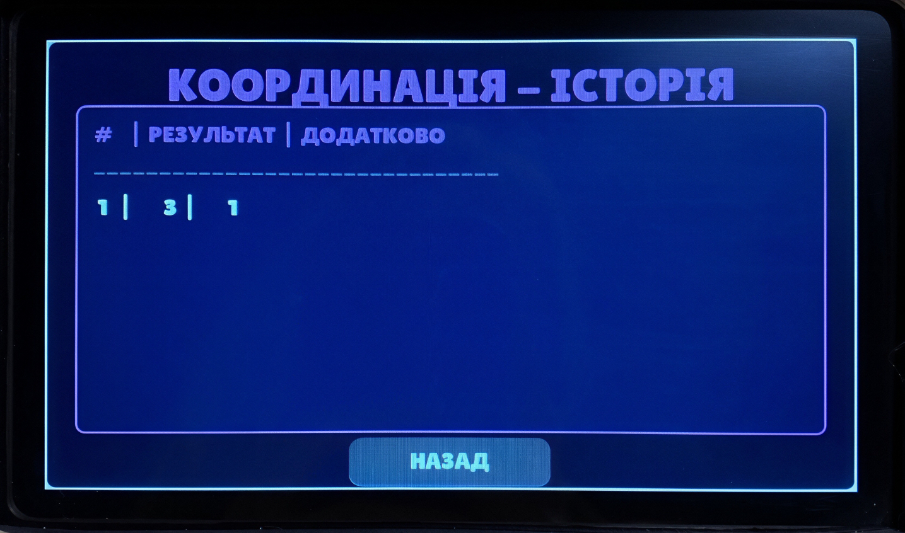
Історія тренувань «Координація» — таблиця результатів
| Кнопка | Дія |
|---|---|
| Очистити статистику | Видалити всі дані цього пацієнта (кнопка внизу праворуч) |
| Назад | Повернутися до вибору пацієнта |
⚠️ Видалення статистики є незворотнім — усі дані пацієнта будуть стерті.
Пристрій надає голосові підказки українською мовою під час тренувань:
| Підказка | Коли звучить |
|---|---|
| «Приготуйся!» | Перед початком раунду |
| «Старт!» | Початок гри |
| «Стоп!» | Завершення часу |
| «Гру завершено!» | Кінець тренування |
| «Відмінно!» | Видатний результат |
| «Добре!» | Гарний результат |
| «Правильно!» | Правильна відповідь |
| «Неправильно!» | Помилка |
| «Час вийшов!» | Вичерпано час на раунд |
| «Запам'ятовуй...» | Показ послідовності (Пам'ять) |
| «Твоя черга!» | Час відтворити послідовність |
| «Запам'ятай кнопки!» | Показ кнопок (Координація) |
| «Натисни кнопки!» | Час натискати (Координація) |
Для енергозбереження та безпеки, пристрій автоматично повертається на попередні екрани при бездіяльності:
| Екран | Таймаут бездіяльності | Куди повертається |
|---|---|---|
| Головне меню | 10 секунд | Вибір пацієнта |
| Вибір пацієнта | 10 секунд | Екран завантаження |
| Колір | Значення |
|---|---|
| Зелений | Правильна ціль / Успішне натискання / Ціль (Реакція, Координація) |
| Червоний | Помилкове натискання / Промах |
| Синій | Статична ціль (Точність — складний рівень) |
| Жовтий | Рухома ціль / «Змійка» (Точність — середній та складний) |
| Пурпурний | Ціль-спалах (Точність — легкий) / Послідовність (Пам'ять) |
| Блакитний | Допоміжні індикатори |
| Вимкнений | Кнопка неактивна / очищена |
| Параметр | Значення |
|---|---|
| Дисплей | 7" TFT LCD, 800×480, сенсорний |
| Кнопки | 16 RGB LED кнопок |
| Профілів пацієнтів | 16 (1 гість + 15 іменованих) |
| Історія сесій | Останні 10 на кожен тренажер |
| Збереження даних | SD-картка |
| Голосові підказки | Українська мова |
| Живлення | USB / зовнішній блок живлення |